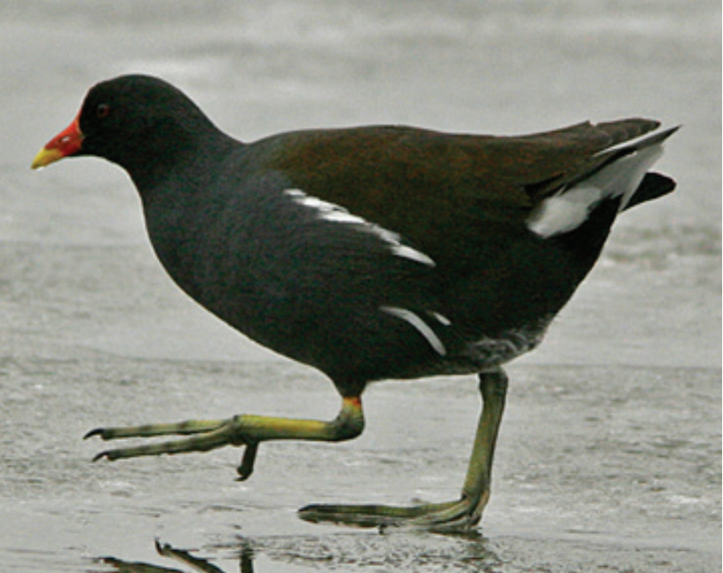

Mulbjerge

The beaches and the shallow water off the coast constitute an internationally very important pantry for resting waterfowl and swimming birds during the migration to Northern Europe and Siberia.

In the spring, the rare arc of light stops in between whooper goose, hundreds of black ducks, eider ducks,velvet ducks, mallards, shorebirds, great bustards, etc. Also, starlings, ring doves and swallows can pass in large numbers.

In the more open areas you can find both nodding cowbell, erect cowbell, blood-red stork beak and narrow-leafed bell. In the spring is excessively purple of boats upright and nodding cowbells, and thousands of anemones bloom at the base of the bushes. Below the slope between Mulbjerge and Kattegat are the coastal country with cultivated marker.